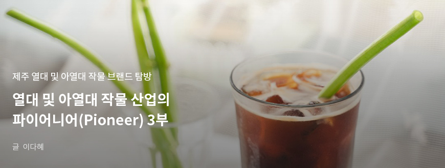
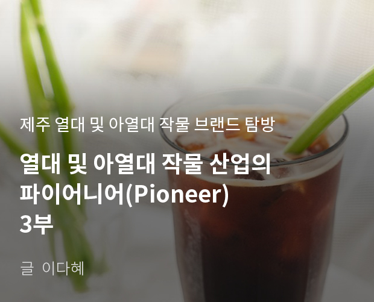
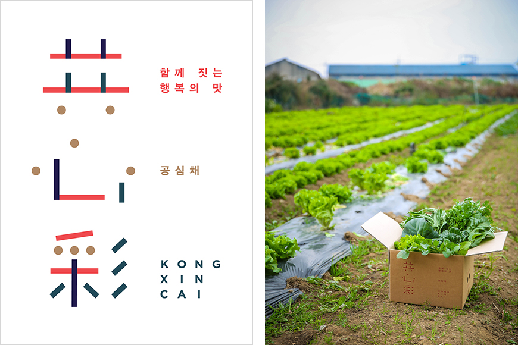
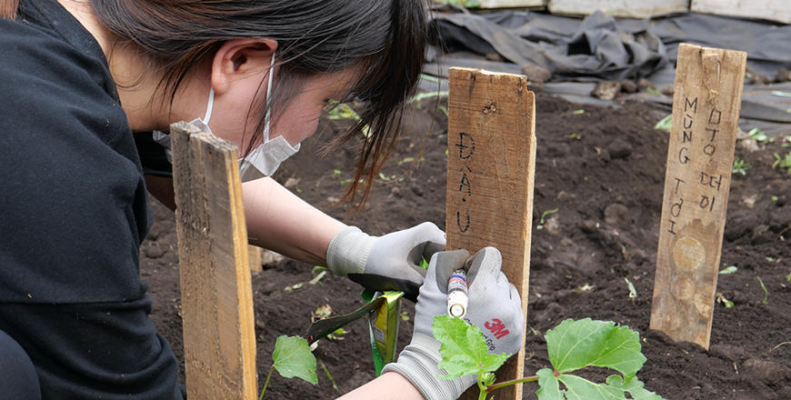

기획취재콘텐츠
- Home
- 제주라이프
- 기획취재콘텐츠
열대 및 아열대 작물 산업의 파이어니어(Pioneer) 3부새로운 글




함께 마음을 모으면 빛이 난다. 열대 및 아열대 작물 사회적 농장 ‘공심채농업회사법인’
우리나라 가구 중 1.6%인 33만이 다문화가구다. 다문화 가구원은 100만 명에 이른다. 열대 및 아열대 작물 소비는 다문화 사회 전환을 기회로 점차 증가하고 있다. 하지만, 여전히 인종 차별과 이주 여성 인권 문제 등 사회 문제가 끊이지 않는다. ‘함께 모으면 빛이 난다.’는 뜻의 이름을 가진 채소 ‘공심채’를 법인 이름으로 채택하고 제주 이주 여성과 함께 먹거리 혁신을 주도하는 회사가 있다. 제주 아열대 채소의 재배, 유통, 체험, 가공까지 전국 제1의 농업회사를 지향하는 ‘공심채농업회사법인’이다.

- (좌)공심채 로고, (우)공심채농업회사법인의 농산물 꾸러미 ⓒ공심채농업회사법인 -
홍창욱 대표는 2017년, 아열대 채소 재배를 통해 결혼 이주 여성 공동체 자립을 돕고 지속 가능한 농촌과 지역 사회 구축을 목표로 공심채농업회사법인을 설립했다. 아열대 채소를 재배하기에 적합한 자연 환경에 아열대 채소 재배와 활용에 이해도가 높은 결혼 이주 여성이 채소 재배에 직접 참여하면, 결혼 이주 여성의 소득 증대는 물론 미래 먹거리 산업을 선도하기에 충분히 가능성 있다고 판단했다.
공심채농업회사법인은 2018년 가을 대정 지역 결혼 이주 여성과 다문화 가정이 모인 최남단영농문화협동조합과 협력해 아열대 작물 공심채와 고수 농사를 시작했다. 생산된 공심채와 고수는 크라우드 펀딩 플랫폼에서 처음 선보였다. 대중적으로 소비량이 많지 않은 아열대 채소를 판매하며 동시에 마케팅하기에 적합하다고 판단했기 때문. 크라우드 펀딩에서 공심채와 고수가 혼합된 아열대 채소 박스, 공심채농업회사법인에서 직접 재배한 루꼴라, 래디쉬 등 샐러드 채소, 여기에 감자, 브로콜리 등 제주 서남단에서 재배한 월동 채소를 리워드로 제공했다. 아열대 채소가 낯선 소비자를 위해 아열대 채소 레시피를 브로셔로 제작해 함께 전달했다.
- 크라우드 펀딩 후원자에게 배포한 아열대 작물 레시피 엽서 ⓒ공심채농업회사법인 -
펀딩 목표액의 100%를 넘기며 아열대 채소 시험 판매를 성공적으로 마무리했다. 크라우드 펀딩 플랫폼을 활용하며 홍보 효과도 톡톡히 봤다. 하얏트 리젠시 등 제주 도내 호텔부터 일반 식당까지 채소 공급 계약을 맺고자 연락이 왔다. 또한, 사회 혁시 전문 컨설팅·임팩트 투자 기관인 엠와이소셜컴퍼니(MYSC)와 연결됐다.
현재 공심채농업회사법인에서는 바질을 주로 생산하며 아열대 채소를 시범재배 하고 있다. 개인 소비가 많지 않은 아열대 채소 특성상 소비량을 예측하기 어렵고 납품처가 유동적이기 때문에 꾸준히 소비가 있는 바질 등 허브류를 판매해 수익 기반을 다지고 아열대 채소 작물 재배 실험을 통해 향후 아열대 채소의 안정적인 재배 농가이자 공급처로 역량을 키우고 있다.
- (좌)공심채농업회사법인의 농장에서 자라는 바질 ⓒ공심채농업회사법인,
(우)공심채로 만든 친환경 빨대 ⓒ공심채농업회사법인 -
(우)공심채로 만든 친환경 빨대 ⓒ공심채농업회사법인 -
공심채농업회사법인은 결혼 이주 여성과 함께 바질, 공심채, 고수 등 아열대 채소를 생산·가공·판매해 로컬푸드화 하는 ‘제주 결혼 이주여성들의 고향채소 로컬푸드화 프로젝트’를 추진하고 있다. 300여 평의 시설하우스에서 무농약 인증 공심채와 바질을 재배하고 2019년 11월 기준 3곳의 학교급식 자재업체와 10여 곳의 식당에 공급해 수익을 올렸다.
2019년 10월에는 서귀포 다문화가족지원센터와 업무 협약을 체결하고 이주여성들과 아열대 채소 재배 및 수확방법과 레시피 등 활용 방법을 공유하고, 국가 별 음식을 조리해 지역 주민과 함께 나누는 이주여성 로컬푸드 식탁 및 교류행사 프로그램을 진행했다. 여기에 체험과 교육용으로 친환경 공심채 빨대를 만들어 활용하고, 바질을 활용한 가공품을 준비하며 아열대 채소의 6차산업화 가능성을 타진 중이다.
바질은 극신선 채소이고 향신 채소라 활용도가 높으며 수요도 꾸준합니다. 점차 바질 가공품이 인지도가 높아지고 있어 올해 제품화를 준비 중입니다.
- 공심채농업회사법인 대표 홍창욱

- 직접 아열대 작물을 심은 텃밭 명패에 이름을 적고 있는 이주 여성 ⓒ공심채농업회사법인 -
2020년 공심채농업회사법인은 제주 사회적 농장으로 지정됐다. 지난 해 추진한 로컬푸드화 프로젝트가 사회적농장 지정에 큰 도움이 됐다. 사회적 농장으로 다문화 가구와 함께 농업 활동을 하고 있다.
지역 사회 혁신과 먹거리 혁신 두 마리 토끼를 잡는 것이 쉽지 않지만, 공심채농업회사법인은 단계적으로 사회적 농장이자 아열대 채소 6차산업 선도기업으로서 성장하기 위해 노력 중이다. 아열대 채소 재배 실험으로 제주 환경에 맞는 재배 기술 역량을 증대하고 다문화 가구 농업인 양성에도 힘 쓰고 있다. 여기에 유튜브와 브런치 등 온라인 채널을 활용해 콘텐츠로 공심채농업회사법인의 작물을 소개한다. 홍창욱 대표는 향후 결혼 이주 여성과 다문화 가족 구성원을 유튜버와 마케터로 육성해 제주의 좋은 농산물을 홍보하고 그들의 고향에 수출하게 하는 것을 목표로 하고 있다.
공심채농업회사법인은 더 많은 로컬 기업과 협력해 제주의 가치를 키울 예정입니다. 다문화 가족을 유튜버와 마케터로 육성하고 제주의 아열대 채소 및 작물을 그들의 고향에 수출하는 플랫폼 역할을 하는 것이 5년 내 목표입니다. 디자이너, 마케터, 유튜버, 크리에이터, 가드너 등 다양한 분야 전문가와 협업하여 회사의 역량을 키우고 전국 제1의 농업회사가 되고자 합니다.
- 공심채농업회사법인 대표 홍창욱
이전글
다음글